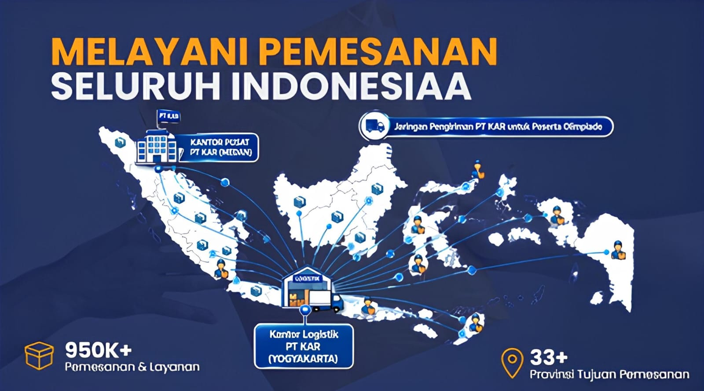

Ringkasan capaian utama PT Ketiara Aliran Rezeki berdasarkan data resmi perusahaan.
Visualisasi data statis berdasarkan angka resmi pada Company Profile PT KAR.
Akumulasi member terdaftar per periode, 2022–2025
2022: 144.053 member (Jan 2021–Okt 2022) · 2023: 257.421 member (Sep 2022–Nov 2023) · 2024: 501.311 member (per Des 2024) · 2025: 682.045 member. Data 2026 masih berjalan ("Bismillah on progress").
Jumlah peserta lulus Perguruan Tinggi Negeri (dalam ribuan)
2024: 66 ribu · 2025: 44 ribu · 2026: 39 ribu*. *Data 2026 belum genap satu tahun penuh. Dihitung dari peserta program PT KAR yang lulus PTN dan menggunakan sertifikat/piagam sebagai referensi pendaftaran.
Capaian jumlah peserta pada event pertama di setiap periode pertumbuhan member.
FIRST EVENT :
OSSI
Februari 2022
18k Peserta
FIRST EVENT :
OSPANESIA
November 2022
18k Peserta
FIRST EVENT :
OSPANESIA
November 2022
19k Peserta
FIRST EVENT :
OLIMNAS
Januari 2024
20k Peserta
FIRST EVENT :
NSO
November 2024
2k Peserta
FIRST EVENT :
OSM
November 2024
2k Peserta
FIRST EVENT :
OPSN
November 2024
1k Peserta
FIRST EVENT :
NYSC
Desember 2024
1k Peserta
Data layanan dan pemesanan produk/kompetisi PT KAR secara nasional.

Total pemesanan dan layanan yang telah dilayani PT KAR di seluruh Indonesia.
Jangkauan pemesanan produk dan layanan PT KAR telah menjangkau 33+ provinsi di Indonesia.
Sertifikat/piagam dari brand yang dinaungi PT KAR telah digunakan dan terbukti keabsahannya sebagai referensi pendaftaran Perguruan Tinggi Negeri di seluruh Indonesia.
Tahun 2023–2025 merupakan capaian yang telah dilalui, sedangkan 2026–2030 merupakan rencana strategis (proyeksi) perusahaan dan belum sepenuhnya terealisasi.
Membangun kepercayaan dan fondasi komunitas berskala nasional.
Aplikasi Edutech Android & ios.
Mengintegrasikan pembelajaran, ujian, dan kompetisi dalam satu ekosistem
Memperluas dampak dari digital ke aktivitas nyata di berbagai daerah.
Menguatakan integrasi brand sistem, dan kepemimpinan lapis kedua.
Menyiapkan struktur, tata kelola, dan pertumbuhan jangka panjang.
Menjadi rujukan nasional dalam ekosistem edukasi berbasis teknologi.
Membangun sistem, manusia, dan dampak pendidikan yang hidup lintas generasi.
Event kompetisi yang telah dikurasi dan diselenggarakan brand-brand di bawah naungan PT KAR, per tahun.
Puskanas - OSH 2022
Puskanas - KSI-HP 2023
Presmanesia - OSPENAS 2023
Gemanesia - KSSI 2024
Gemanesia - SSN 2024
Puskanas - OSSN 2024
Puskanas - KESAN 2024
Puskanas - KSNP 2024
Presmanesia - PESONA 2024
Presmanesia - PESONAS 2024
Gemanesia - OLIMNAS 2025
Gemanesia - SSN 2025
Puskanas - OSSI 2025
Puskanas - KSI-HP 2025
Presmanesia - IOS 2025
Presmanesia - OSPENAS 2025
Sentral - KSAI 2025
Presmanesia - OSN-AT 2026
Fosnas - ISO 2026
Presmanesia - Pesona 2026
Fosnas - OSAN 2026
*Daftar 2026 masih bertambah, tahun berjalan.